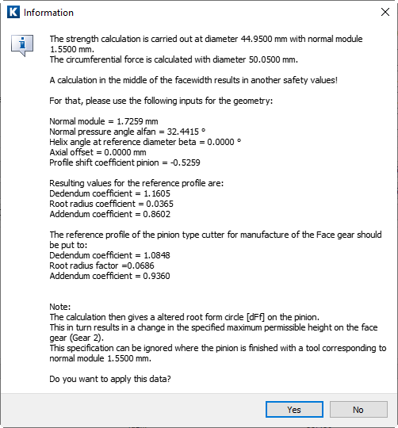

|
|
|


法向模数
输入法向模数。但是，如果您知道的是周节、端面模数或径节而不是法向模数，请单击 Convert 按钮以显示用于执行转换的对话框窗口。如果您想输入径节而不是法向模数，您可以选择，方法是选择。
如果端面齿轮的几何形状已完全定义，则单击 Convert 按钮后将收到以下消息：

图 17.2：用于确定法向模数尺寸的信息窗口
强度计算针对面齿轮的平均直径进行，作为根据 ISO 10300 或 DIN 3991 进行的锥齿轮计算的一部分。如果轴向偏距 bv <> 0，则不满足此类计算的条件。因此，通过 Sizing 按钮触发的功能支持法向模数 mn 和压力角 αn 的转换，以确保 bv = 0。尽管这会改变小齿轮的齿根过渡圆角半径，但齿面的形状保持不变。
注意
我们建议您仅在执行强度计算时使用此转换方法。转换会改变模数，您将无法再使用该工具。因此，在执行转换之前，您必须保存几何数据。
Normal module
Enter the normal module. However, if you know the pitch, transverse module or diametral pitch instead of this, click on the Convert button to display a dialog window in which you can perform the conversion. If you want to transfer the diametral pitch instead of the normal module, you can select by selecting .
If the geometry of a face gear has been completely defined, you will receive the following message after clicking the Convert button:
Figure 17.2: Information window for sizing the normal module
The strength calculation is performed for the mean diameter of the face gear as part of the bevel gear calculation performed according to ISO 10300 or DIN 3991. If the axial offset bv <> 0, the conditions for this type of calculation have not been met. For this reason, the functionality triggered with the Sizing button supports the conversion of normal module mn and pressure angle αn, to ensure that bv = 0. Although this changes the root fillet radius of the pinion, the shape of flank remains the same.
Note
We recommend you only use this conversion method when you perform the strength calculation. The conversion changes the module and you can no longer use the tool. For this reason, you must save your geometry data before you perform the conversion.